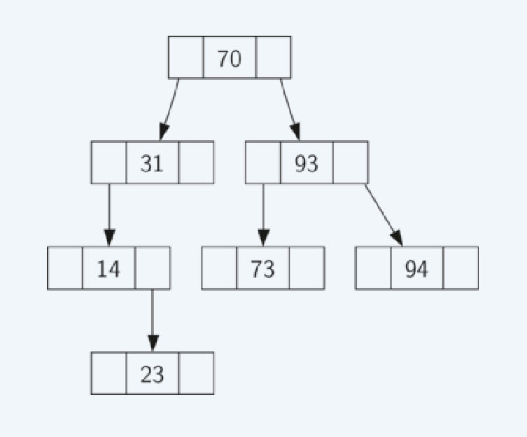

Binary Search Tree
Big-O Efficiency: O(log n)
A binary search tree relies on the property that keys that are less than the parent are found in the left subtree,
and keys that are greater than the parent are found in the right subtree. We will call this the bst property.
The bst property will guide our implementation.
Figure 1 illustrates this property of a binary search tree,
showing the keys without any associated values. Notice that the property holds for each parent and child.
All of the keys in the left subtree are less than the key in the root. All of the keys in the right subtree
are greater than the root.
Figure 1
